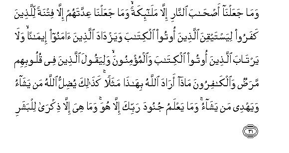

بسم الله الرحمن الرحيم
Sayyid Abul Ala Maududi - Tafhim al-Qur'an - The Meaning of the Qur'an
 74.
Surah Al Muddaththir (The Cloaked One)
74.
Surah Al Muddaththir (The Cloaked One)
The Surah takes its name from the word al- muddaththir in the first verse. This also is only a name, not a title of its subject matter.
The first seven verses of this Surah belong to the earliest period at Makkah. Even according to some traditions which have been related in Bukhari, Muslim, Tirmidhi, Musnad Ahmad, etc., on the authority of Hadrat Jabir bin Abdullah, these are the very earliest verses of the Qur'an to be revealed to the Holy Prophet (upon whoa be peace). But the Muslim Ummah almost unanimously agreed that the earliest Revelation to the Holy Prophet (upon whom be peace) consisted of the first five verses of Surah Al-Alaq(XCVI) However, what is established by authentic traditions is that after this first Revelation, no Revelation came down to the Holy Prophet (upon whom be peace) for quite some time. Then, when it was resumed, it started with theme verses of Surah Al- Muddaththir. Imam Zuhri has given the following details of it:
"Revelation to the Holy Prophet remained suspended for quite some time, and it was such a period of deep grief and distress for him that he started going early to the tops of the mountains to throw himself down from them. But whenever he stood on the edge of a peak, the Angel Gabriel would appear and tell him that he was Allah's Prophet. This would console him and restore to him full peace of mind." (Ibn Jarir).
After this Imam Zuhri relates the following tradition on the authority of Hadrat Jabir bin Abdullah:
"The Ho]y Messenger of Allah describing the period of falrat al-wahi (break in revelation) said: One day when I was passing on the way, I suddenly heard a call from heaven. I raised my head and saw that the same Angel who had visited me in the Cave of Hira was sitting on a throne between heaven and earth. This struck terror in my heart, and reaching home quickly, I said: 'Cover me up, cover me up'. So the people of the house covered me up with a quilt (or blanket). At that time Allah sent down the Revelation: Ya ayyuhal-Muddaththiru... From then on revelation became intense and continuous." (Bukhari, Muslim Musnad Ahmad, Ibn Jarir).
The rest of the Surah (vv. 8-56) was revealed when the first Hajj season came after public preaching of Islam had begun in Makkah. This has been fully well described in the Sirah by Ibn Hisham and we shall cite it below.
As has been explained above, the earliest Revelation to the Holy Prophet (upon whom be peace) consisted of the first five verses of Surah Al-Alaq, in which it had been Said: "Read (O Prophet), in the name of your Lord, Who created: created man from a clot of congealed blood. Read: and your Lord is Most Generous, Who taught knowledge by the pen, taught man what he did not know."
This was the first experience of Revelation met with suddenly by the Holy Prophet (upon whom be peace). in this message it was not told what great mission he had been entrusted with and what duties he had to perk form in future. He was only initiated into it and then left alone for a time so that the great strain this experience had caused should pass away and he should mentally become prepared to receive the Revelation and perform the prophetic mission in the future. After this intermission when Revelation Was resumed, the first seven verses of this Surah Were revealed:In these he Was for the first time commanded to arise and warn the people of the consequences of the way of life they were following and to proclaim the greatness of God in the world where others were being magnified without any right. Along with that he was given this instruction: The demand of the Unique mission that you have to perform, now is that your life should be pure in every respect and you should carry out the duty of reforming your people sincerely irrespective of any worldly gain. Then, in the last sentence, he was exhorted to endure with patience, for the sake of his Lord, all the hardships and troubles that he might have to face while performing his mission.
In the implementation of this Divine Command when the Holy Messenger of Allah began to preach Islam and recite the Qur'anic Surahs revealed successively, the people of Makkah felt alarmed, and it provoked a great storm of opposition and hostility. A few months passed in this state until the Hajj season approached. The people of Makkah feared that if Muhammad (upon whom be Allah's peace) started visiting the caravans of the pilgrims coming from all over Arabia at their halting places and reciting the spell binding and unique Revelations of the Qur'an in their assemblies on the occasion of Hajj, his message would reach every part of Arabia and influence countless people. Therefore, the Quraish chiefs held a conference and settled that they would start a propaganda campaign against the Holy Prophet (upon whom be peace) among the pilgrims as soon as they arrived.
After they had agreed on this, Walid bin al-Mughirah said to the assembled people: "If you said contradictory things about Muhammad (upon whom be Allah's peace and blessings), we all would lose our trust among the people. Therefore, let us agree upon one opinion, which we should all say without dispute.
Some people said that they would call Muhammad (upon whom be Allah's peace and blessings) a soothsayer. Walid said: “No, by God, be is not a soothsayer. We have seen the soothsayers: what they murmur and what they utter has no remote resemblance with the Qur'an.”
Some other people said: “Then we say he is possessed.” Walid said: He is not a possessed one: we have seen mad and insane people; the way one talks disjointedly and behaves foolishly in that state is known to all: who would believe that what Muhammad (upon whom be peace) presented was the incoherent speech of a madman?”
The people said: “Then we say he is a poet.” Walid said: “No, he is not a poet, for we know poetry in all its forms, and what he presents conforms to no form of it.”
The people said: “Then he is a sorcerer.” Walid said: “He is no sorcerer either: we have seen sorcerers and we also know what methods they adopt for their sorcery. This also does not apply to Muhammad.”
Then he said: "Whichever of these things you said about Muhammad, it would be known to be a false accusation. By God, his speech is sweet, his root is deep and his branches are fruitful.” At this Abu Jahl urging on Walid said: “Your people will never be pleased with you unless you say something about Muhammad.” He said: “Let me think over it awhile.”
Then, after prolonged thought and consideration, he said: “The nearest thing to the truth is that you tell the Arabs that he is a sorcerer, who has brought a message by which he separates a man from his father; and from his brother, and from his wife and children, and from his family.” They all agreed on what Walid had proposed.
Then, according to a scheme the men of Quraish spread among the pilgrims in the Hajj season and they warned everyone they met of the sorcery of Muhammad (upon whom be peace) and of his stirring up divisions in the families by it." But the result was that by their this plan the Quraish chiefs themselves made the name of the Holy Messenger known throughout Arabia. (Ibn Hisham, pp. 288-289. That Walid had made this proposal on the insistence of Abu Jahl has been related by Ibn Jarir in his Tafsir on the authority of Ikrimah).
This same event has been reviewed and commented upon in the second section of this Surah. The sequence of its contents is as follows:
In vv. 8-10 the deniers of Truth have been warned, saying: "You will see the evil result of what you are doing today on the Resurrection Day."
In vv. 11-26, without naming Walid bin al-Mughirah, it has been told how Allah had blessed him and how inimical he proved to be to true Faith. In this connection, his mental conflict has been portrayed, telling that, on the one hand, he was fully convinced of the truth of Muhammad (upon whom be Allah's peace and blessings) and the Qur'an, but, on the other, he did not want to risk his leadership and position among his people. Therefore, not only he did not believe himself but after a long-drawn-out conflict with his conscience he also came out with the proposal that in order to restrain the people from believing the Qur'an should be branded as magic. After exposing his evil nature, it has been said: "Notwithstanding such evil inclinations and misdeeds, this person desires that he should be further blessed, whereas he has now become worthy of Hell, and never of further blessings."
In vv. 27-48, the dreadfulness of Hell has been depicted and it has been explained as to people of what character and morals really deserve it.
In vv. 49-53, the root cause of the disbelievers' aversion has been pointed out, saying: "Since they are fearless of the Hereafter, and look upon this worldly life as an end in itself, they flee from the Qur'an as though they were wild asses fleeing away from the lion: therefore, they propose unreasonable conditions for believing, whereas even if each and every condition of theirs was fulfilled, they could not advance even an inch on the way of Faith with their denial of the Hereafter."
In conclusion, it has been explicitly stated: Allah does not stand in need of anybody's faith that He may fulfill his conditions. The Qur'an is an admonition that has been presented before the people openly; now whoever wills may accept it. Allah has a right that the people should fear His disobedience and He alone has the power to forgive the one who adopts piety and an attitude of God consciousness even though one may have committed many acts of disobedience in the past.

In the name of Allah, the Compassionate, the Merciful.

[1-7] O you who lies wrapped up,1 arise and warn2 and proclaim the greatness of your Lord.3 And keep your garments pure,4 and avoid filth,5 and do not favor (others) expecting to get more,6 and be patient for the sake of your Lord.7

[8-37] When the Trumpet is blown, it shall be a very hard Day,8 not easy for the disbelievers.9 Leave Me and the person10 whom I created alone.11 I gave him ample wealth and sons to be present by his side,12 and smoothed for him the way to his leadership (and prosperity). Yet he desires that I should give him more.13 No, never! He is hostile to Our Revelations. I shall soon make him ascend a hard ascent. He pondered and tried to devise a plan. May God destroy him: what he tried to devise! Yes, may God destroy him, what he tried to devise! Then he looked around, then he frowned and scowled, then he turned his back and showed arrogance. At last, he said, "This is nothing but magic, handed down from the past; nothing but the word of a mere mortal.14 Very soon I shall cast him into Hell. And what do you know what Hell is? It leaves nothing and it spares none.15 It scorches the skin.16 Nineteen keepers are appointed over it. We17 have appointed only angels as the keepers of Hell,18 and have made their number a trial for the disbelievers,19 so that the people of the Book are convinced20 and the believers are increased in their faith,21 and the people of the Book and the believers may have no doubts, and the sick of the heart22 and the disbelievers may say, "What could Allah mean by this strange parable?"23 In this way Allah leads astray whom He wills and gives guidance to whom He wills,24 and none knows the hosts of your Lord but He Himself.25 And Hell has been mentioned so that the people may take heed.26 No, never!27 By the moon and by the night when it withdraws, and by the morning when it dawns, this Hell too, is one of the mighty things,28 a warning to mankind, a warning to every one of you, who desires to go forward, or to lag behind.29
[38-48] Every person is a pledge for his own deeds,30 except the people of the right hand, who shall be in Gardens.31 There they will ask the culprits,32 "what has brought you into Hell?" They will reply, "We were not of those who offered the salat,33 and we did not feed the poor,34 and we used to join with those who indulged in idle talk against the Truth, and we used to belie the Day of Recompense, till the inevitable overtook us."35 At that time, no intercession of the intercessors shall avail them anything.36

[49-56] What then is the matter with these people that they are turning away from this Admonition as though they were wild asses fleeing away from a lion?37 Nay, each one of them desires that he should be sent open letters.38 No, never! The fact is that they do not fear the Hereafter.39 No, never!40 This indeed is an Admonition. So, let him who wills, take heed. But they will never take heed unless Allah so wills.41 He alone is worthy that he should be feared,42 and He alone is worthy to forgive (those who fear Him).43
1A study of the background of the revelation of these verses given in the introduction above can help one understand why the Holy Prophet (upon whom be peace) on this occasion has been addressed with Ya ayyuhal-Muddaththiru instead of Ya ayyuhar-Rasulu (O Messenger), or Ya ayyuhan-Nabiyyu (O Prophet). As the Holy Prophet had been terrified when he had suddenly seen the Angel Gabriel (on whom be peace), sitting on a throne between heaven and earth, and had returned hastily home and asked the people of the house to cover him up, so Allah addressed him with Ya ayyuhal-Muddaththiru. From this fine way of address the meaning which automatically follows is: "O My dear Servant, why have you lain down thus enwrapped? You have been put under the. burden of a great mission: you must now arise from your solitude to perform this mission with resolution and courage."
2A command of this very nature had been given to the prophet Noah (peace be on him) while appointing him to the office of Prophet hood; "Warn the people of your nation before they are overtaken by a painful torment." (Nuh: 1) The verse means: "O you who lies enwrapped, stand up and arouse the people who live in heedlessness around you: warn them of the fate which would certainly overtake them if they remained involved in the same heedlessness, Warn them that they are not living in a lawless kingdom where they are free to conduct themselves as they like and where they can do wherever they please without any fear or being called to account for it. "
3This is the primary duty of a Prophet, which he has to perform in this world. His foremost duty is to refute the greatness of all those whom the ignorant people might be holding as great, and publicly proclaim that we greatness in this universe belongs to none but Allah alone. For this very reason the phrase Allahu Akbar has been Geld as of supreme importance in Islam. The adhan (call to prayer) begins with the proclamation of Allahu Akbar. The Muslim enters the Prayer itself with Allahu Akbar and repeats Allahu Akbar every time he sits or stands, He pronounces Bismillahi Allahu Akbar also when slaughtering an animal. The slogan of Allahu Akbar has become a most distinctive and prominent emblem of Muslims throughout the world today, for the Prophet of this Ummah himself had embarked on his mission with the magnification and glorification of Almighty Allah.
Here, there is another fine point, which must be understood well. As we have learned from the background of the revelation of these verses, this was the first occasion when the Holy Prophet (upon whom be peace) had been commanded to arise for performing the duties of the great mission of Prophethood, and it was obvious that the city and society in which he was commanded to perform this mission, was the center of polytheism. Not only were the people around him polytheistic like the common Arabs but, more than that, the city of Makkah had become the most sacred place of pilgrimage for the polytheistic Arabs, and the Quraish were its attendants. Arising of a person in such a place all by himself and proclaiming the Oneness of God in the face of polytheism was full of risks. That is why the exhortation to "proclaim the greatness of your Lord" just after "arise and warn" contains this meaning also: "Do not at all mind the terrifying and dreadful forces that seem to be obstructing and impeding your work and proclaim publicly that your Lord is the greatest of all those who can hinder and resist you from giving your message. This is indeed the greatest encouragement for a person who embarks on a Divine mission. The one who has Allah's greatness and majesty deeply embedded in his heart will feel no hesitation at all in facing and fighting the entire world by himself for the sake of Allah.
4These are very comprehensive words, which are full of meaning.
They mean this: "Keep your garments free from every filth and impurity, for the purity of the body and garments and the purity of the spirit are inter-linked and inter-dependent. " A pure spirit and an impure body with impure garments cannot live together. The society in which the Holy Prophet (upon whom be peace) had arisen with the invitation to Islam, was not only steeped in the evils of unbelief and immorality, but was also devoid of even the most elementary concepts of purity and cleanliness, and the Holy Prophet's task was to teach its members cleanliness in every way of life. Therefore he was instructed to establish and present a high standard of purity in his external life as well. Thus, it is the result of the same instruction that the Holy Prophet (upon whom be peace) gave mankind such detailed teaching about the cleanliness of the body and garments as is not possessed even by the most civilized nations of today, not to speak of the Arabs of the pre-Islamic days of ignorance. So much so that in most of the languages of the world there is no word synonymous with "taharat" ". On the contrary, in Islam every book of the Hadith and Fiqh begins with injunctions and instructions on taharat (purity), which distinguishes between purity and impurity and gives minute details about the methods and means of obtaining purity.
The second meaning of these words is: "Keep your garments neat and clean." The criterion of religiosity given to the world by the monastic concepts was that a man was holy to the extent he was unclean. If a person happened to put on neat clothes, he was looked upon as a worldly man, whereas the fact is that human nature abhors filth and uncleanness and even a person of ordinary fine taste loves to be associated only with a neat and clean person. On this very basis, for the one calling the people to Allah it was made imperative that externally also he should look so neat and clean that the people should regard him with esteem and his personality should not be stained in any way so as to repel others.
The third meaning of this Divine Command is: "Keep your garments free from moral evils: your dress should be neat and clean but it should bear no tinge of vanity and pride, display and exhibition, pomp and show. " The dress is the first thing that introduces the personality of a person to others. The kind of dress a person wears makes the people judge at first sight what kind of a man he is. The dresses of the rulers and princes, the dresses of the religious functionaries, the dresses of the vain and conceited people, the dresses of the mean and shallow people, the dresses of the evil-natured and characterless people, all represent the tastes and tempers of those who wear them. The temper of the one calling to Allah is naturally different from all such people. Therefore, his dress also should necessarily be different from all of them. He should wear such a dress as .should make everyone else feel that he is a noble and refined person, who is not involved in any evil of the self.
Its fourth meaning is: Keep away from moral evils. Ibn `Abbas, Ibrahim Nakha`i, Sha`bi, `Ata', Mujahid. Qatadah, Sa`id bin Jubair, Hasan Basri and other major commentators have given this very meaning to this verse: keep yourself morally pure and avoid all that is blameworthy. In Arabic usage also when it is said: "So and so is clean in his garments", it implies that he is morally good and pure; on the contrary, when it is said: "He is filthy in his garments", it means that he is dishonest and fraudulent in his dealings: he is unreliable.
5"Filth" implies every kind of filth, whether of belief and thought, of morals and deeds, of the body, dress or mode of life. The verse means: "Keep yourself free from the filth of evils which are prevalent in society around you: no one should ever impute to you the blame that your own life itself is stained in some degree with the evils that you tell others to avoid."
6The words wa la tamnun tastakthir in the original are so vast in meaning that no one sentence can convey their full sense in translation.
Their one meaning is: "Whomever you favor, you should favor him without any selfish motive. Your bestowal of an endowment and donation, your generosity and good treatment should be only for the sake of Allah: there should be no trace in it of the desire that you should receive any worldly gains in return for the favor done. In other words, do good to others for the sake of Allah, not for seeking any benefits."
The second meaning is: "Although the mission of Prophethood that you are performing is a great favor in itself, for the people are obtaining true guidance because of it, do not remind the people of this favor, nor try to obtain any personal benefits from it."
The third meaning is: "Although you are performing a great service, you should never gloat over it, nor should ever have the idea that by performing your prophetic duties, at the risk of life, you are doing any favor to your Lord."
7That is, "The task that is being entrusted to you is full of hazards: you will meet with great hardships and difficulties and troubles on this way: even your own people will turn hostile to you and the whole of Arabia will become your enemy. Yet you should endure with patience, for the sake of your Lord, whatever you may have to face in this way, and carry out all your duties firmly and resolutely. Fear, greed, friendship, enmity, love, all these will hinder your way, but you should stand your ground firmly and steadfastly."
These were the very preliminary instructions which Allah gave His Messenger (upon whom be peace) at the time when He commanded him to arise and start the work of Prophethood. If a person ponders over these brief sentences and their meaning his heart will testify that no better instructions could be given to a Prophet at the commencement of his prophetic mission. In these he was told what he was required to do, what kind of life, morals and dealings he should adopt, and taught with what intention, mentality and mode of thought he should go about his mission and also forewarned what kind of conditions he would meet with in the performance of his mission and how he would have to face and overcome them Today the people who, blinded by their prejudices, say that these words were. God forbid, uttered by the Holy Prophet (upon whom be peace) during epileptic fits, should study these sentences carefully and judge for themselves whether these are the product of any epileptic fits, or the instructions of a God, which He gave to His Servant while appointing him to the mission of Apostleship.
8As already explained in the introduction, this part of the Surah was sent down a few months after the initial verses when at the beginning of the first ever Hajj season, after the advent of Islam, the Quraish chiefs decided in a conference to start a powerful propaganda campaign to dissuade the outsiders, who came to visit the Ka`bah, from the Qur'an and the Holy Prophet Muhammad (upon whom be Allah's peace and blessings). In these verses, this very scheming of the Quraish has been reviewed, and the review has begun with the words, as if to say: "You they act as you please, but even if you succeed in achieving your object by these devices in the world, how will you save yourselves from your evil end on the Day when the Trumpet will be sounded and Resurrection established?" (For explanation of the Trumpet, see E.N. 47 of Al-An`am, E.N. 57 of Ibrahim, E.N. 78 of Ta Ha, E.N. 1 of Al-Hajj, E.N.'s 46, 47 of Ya Sin, E.N. 79 of Az-Zumar, E.N. 52 of Qaf).
9These words by themselves support the conclusion that that Day will be light for the believers, and its hardships will be specially intended only for the deniers of the Truth. Moreover, these words also contain the meaning that the severity of that Day will be of an enduring and permanent nature for disbelievers it will not be a severity which might be expected to become mild with the passage of time.
10The address is directed to the Holy Prophet (upon whom be peace) and it means: "O Prophet, leave the case of the person (Walid bin al-Mughirah) to Me, who in the disbelievers' conference proposed that you should be branded as a sorcerer among the pilgrims coming from different parts of Arabia; it is now for Me to deal with him; you need not bother yourself about it at all.”
11This sentence can have two meanings and both are correct:
(1) "That when I created him, he was not at that time born with any wealth and children and position of authority and chieftainship” and
(2) "that I alone was his Creator: those other gods whose godhead he is so ardently trying to keep established and is opposing your invitation to One God for the same object, were not My associates in creating him. "
12Walid bin al-Mughirah had ten or twelve' sons of whom Hadrat Khalid bin Walid became most famous. For these sons the word shuhud has been used, which can have several meanings:
(1) That they do not have to run about and go abroad in search of their livelihood: they have enough provisions at home; therefore, they can always remain at the beck and call of their father;
(2) that all his sons are prominent and influential people: they sit in assemblies and conferences with him; and
(3) that they are the people of high rank and position and their testimony is accepted in all matters of life.
13Its one meaning is that there is still no end to his greed. In spite of having all this he still desires that he should be granted every good thing of the world. Another meaning which Hadrat Hasan Basri, and some other scholars have given is:, "He used to say: If what Muhammad (upon whom be peace) says is really true that there is another life after death, and there will be a Paradise also in it, then that Paradise too has been prepared for me."
14The reference is to what happened in the conference of the disbelievers of Makkah. From the details of it that we have given in the Introduction, it becomes obvious that this man in his heart had become fully convinced of the Qur'an's being Divine Word, but in order to save his position as a chief of his people, he was not prepared to affirm faith. When in the conference he himself turned down all the accusations that the Quraish chiefs were proposing against the Holy Prophet (upon whom be peace), he was compelled to devise an accusation from himself, which could be spread among the Arabs in order to bring a bad name to the Holy Prophet. Then, the way he struggled against his conscience, and the way he devised an accusation at last after a prolonged mental conflict, has been vividly depicted here.
15This can have two meanings: first, that it will burn to ashes whoever is cast into it, but even after death he will not escape from punishment: he will be given life once again and burnt once again, This very subject has been treated at another place thus: He will neither die in it nor live." (Al-A`la: 13) Another meaning also can be: "It will leave none who has deserved the punishment and it will spare none from being punished. "
16After saying that it will leave nothing of the body unconsumed, making mention of "scorching of the skin" separately seems to be somewhat unnecessary. But this form of the punishment has been mentioned separately in particular because it is the skin of a man's face and body which actually makes his personality prominent, and it is its ugliness which makes him feel most ill at ease. He is not so grieved at the internal troubles of his body as, for instance, at his face being ugly, or that there should be spots on the skin of the exposed parts of his body, abhorrent to others. That is why it has been said: If the people who feel proud of their personalities in the world because of having handsome faces and splendid bodies, treat the Revelations of Allah mockingly, as did Walid bin al-Mughirah, their faces will be scorched and their skins burnt black.
17The whole passage from here to "none knows the hosts of your Lord but He Himself", is a parenthetical sentence, which has been inserted here to answer an objection of the disbelievers, who had started mocking it when they heard the Holy Prophet (upon whom be peace) say that 19 keepers had been appointed over Hell.
Their objection was: "How strange that, on the one hand, we are told that all human beings, from the time of the Prophet Adam till Resurrection, who disbelieved and committed evil, will be cast into Hell. and, on the other, that there will be only 19 keepers, who will administer punishment to the countless numbers of men in such a huge Hell. "
This caused a huge laughter among the chiefs of Quraish. Abu Jahl said: "Brothers, are you so powerless that even as many as ten of you at a time will not be able to overpower a single policeman of Hell?" At this a wrestler of the Bani Jumha said: ` Well I will deal with and overpower at least 17 of them by myself; as for the remaining two, you all together can tackle them. " In response these sentences have been inserted as a parenthetical clause.
18That is, "It is foolish on your part to compare the angelic powers to human powers. They will be angels, not men, and you cannot imagine what tremendous powers Allah has granted to the angels He has created."
19That is, "Although apparently there was no need to mention the number of the keepers of Hell, yet We have mentioned it so that it becomes a trial for every such person who may be concealing any kind of unbelief in his heart. Such a man may be making a great display of his faith but if he conceals even a tinge of the doubt about the Godhead and supreme powers of God, or about Revelation and Prophethood, anywhere in his heart, his disbelief would immediately be exposed as soon as he would hear that only 19 policemen would control countless numbers of the culprits from among the jinn and men in such a huge jail and would also administer punishment to each of them individually. "
20Some commentators have explained it thus: "As in the scriptures of the Jews and Christians themselves also the same number of the angels has been mentioned as keepers of Hell, they would be convinced of this thing's being truly from Allah as soon as they heard it." But in our opinion this commentary is not correct for two reasons. First, we have not been able to see anywhere in the existing scriptures of the Jews and Christians in spite of search that the number of the angels appointed over Hell is 19. Second, there are many things in the Qur'an, which also have been mentioned in the scriptures of the Jews and Christians, yet they explain them away, saying that the Prophet Muhammad (upon whom be Allah's peace and blessings) has plagiarized these from their books. For these reasons the correct meaning of this statement in our opinion is: The Holy Prophet Muhammad (upon whom be Allah's peace and blessings) knew fully well that he would be ridiculed as soon as the disbelievers heard that 19 angels had been appointed over Hell, but in spite of this, he presented without the least hesitation and fear publicly before the people what had been revealed to him from Allah, and did not at all mind the jesting and mocking by the people. The pagans of Arabia were unaware of the unique distinction of the Prophets, but the followers of the earlier scriptures were fully aware that the Prophets in every age used to convey to their people intact whatever they received from God, whether it pleased them or displeased them. On this very basis it was to be expected of the Jews and the Christians that they would be convinced of the Prophet Muhammad's truth for only a Prophet could present an apparently strange thing without any hesitation before the people in an environment charged with antagonism and hostility. This also is evident that such a thing was shown by the Holy Prophet on many other occasions. Its most prominent example is the event of the mi'raj (ascension) which he related openly before a general assembly of the disbelievers and did not at all care how his opponents would behave and react after they had heard the story of the wonderful event.
21It has been explained at several places in the Qur'an above that on the occasion of every trial when a believer remains steadfast to his faith, and forsaking the way of doubt and denial, disobedience or disloyalty to the faith, adopts the way of faith, obedience and loyalty to it, it increases and strengthens him all the more in faith and resignation (For explanation, see 'Al-Imran: 173, Al-Anfal: 2, At-Taubah: 124125, Al-Ahzab: 22, Al-Fath: 4 and the corresponding E.N.'s).
22As "sickness of the heart" in the Qur'an is generally understood to imply hypocrisy, seeing this word here some commentators have expressed the view that this verse was revealed at Madinah, for the hypocrites appeared at Madinah. But this view is not correct for several reasons. In the first place, the assertion itself that there were no hypocrites at Makkah is false, and its false-hood has been exposed in the Introduction to the Surah Al-`Ankabut and in its vv. 1011.
Secondly, in our opinion it is not a correct way of writing commentary that in respect of a certain sentence occurring in a particular discourse which was revealed on a particular occasion, under particular circumstances, one should declare that it had been sent down on another occasion but has been inserted here without any relevance. The historical background of this part of Surah Al Muddaththir is fully well known to us from authentic traditions. This was revealed in connection with a particular event of the earliest period of the life at Makkah. The whole context bears full relevance to the event. What could, therefore, be the occasion in this context that this one sentence, if it was revealed many years later at Madinah, should have been inserted here?
As for the question what is implied by the disease of the heart here, its answer is that it implies the disease of doubt. Not only in Makkah but in the entire world also there have been, and are, very few such people, who might deny God, Hereafter, Revelation, Prophethood, Heaven. Hell, etc. absolutely. In every age the greater majority by far has been of those people, who have been involved in the doubt whether there is God, or no God, Hereafter or no Hereafter, whether Heaven and Hell really exist, or are mere figments of the imagination, and whether the Messengers did really come and receive Revelation or not. This same doubt has led most people to unbelief, otherwise the number of such people in the world who denied these truths absolutely has never been great. For a person who has any common sense knows that there is no rational ground whatever for denying the possibility of the existence of these things, or of declaring them absolutely impossible.
23This does not mean that they accepted it as Divine word but wondered why Allah had said such a thing. But what they actually meant was: "A discourse which contained such an irrational and impossible thing could not be a Revelation from Allah."
24That is, Allah in this very way sometimes sends down in the course of His Revelations and Commandments such things as become a means of test and trial for the people. It is one and the same thing which a truth-loving, good-natured and right-minded person hears and understanding its right meaning in the right way, adopts the straight path, but which when heard by an obstinate, perverse and willful wrongdoer, makes him to misconstrue it and make it a new excuse for fleeing from the truth. Since the first man is himself a lover of the truth, Allah grants him guidance, for it is not the way of Allah to lead the seekers after truth forcibly astray; and since the second man himself does not want guidance, but chooses only error for himself, Allah also pushes him on to the way of error and deviation, for it is also not the way of Allah to forcibly pull to the way of the truth him who has an aversion to the truth. (The question of Allah's granting guidance and misguidance has been fully explained at many places for example, see E.N.'s 10. 16, 19, 20 of Al-Baqarah; E.N. 173 of An-Nisa', E.N.'s 17, 28, 90 of Al An`am, E.N. 13 of Yunus, E.N. 54 of Al-Kahf, E..N. 71 of Al-Qasas)
25That is, none knows but Allah what different kinds and how many of the creatures He has created in the universe, what powers He has granted them, and what services He is taking from them. If the man clinging to the tiny globe of the earth seeing the tiny world around himself with his limited sight, is involved in the misunderstanding that the universe of God contains nothing but what he can perceive by his senses or by his instruments, this would only be his own shortsightedness, other wise this universe is so vast and limitless that it is not in the power of man to obtain full knowledge about any of the things here, not to speak of comprehending mentally the concept of all its vastnesses.
26"The people may take heed" the people may recover their senses and wake up before they make themselves worthy of Hell and suffer its punishment, and should think of saving themselves from it.
27That is, it is not a hollow thing which may be mocked like that.
28That is, "Just as the moon and the night and the day are the great signs of the powers of Allah, so also is Hell a great sign of His powers. If the existence of the moon and the alternation of the night and day so regularly were not impossible, why should the existence of Hell be impossible as you think it is? You see these phenomena day and night; therefore, they do not surprise you: otherwise these things in themselves also are great marvels of the powers of Allah. If you had not observed them and somebody were to tell you that there is also such a thing as the moon in the world, or, there is a sun which leaves the world dark when it hides and makes the world shine forth with light when it appears, then the people like you would have made jests of it too as you make jests of Hell."
29That is, the people have been warned to this effect. Now, let him who heeds the warning go forward on the right way, and let him who wills still lag behind.
30For explanation, see E.N. 16 of Surah At-Tur.
31In other words, the people of the left hand will be seized in consequence of their misdeeds, but the people of the right hand will have their debts settled. (For explanation of the people of the right hand and the left hand, see E.N.'s 5, 6 of Surah Al-Waqi`ah).
32At several places in the Qur'an above, it has been stated that the dwellers of Paradise and the dwellers of Hell will be able to see and commune with each other directly without the agency of any instrument whenever they will so desire, although they will be living hundreds of thousands of miles away from each other. For instance, see Al-A`raf: 44-50 and E.N. 35, As-Saaffat: 50-57 and E.N. 32 on it.
33That is, "We were not of those who after having believed in Allah and His Messenger and His Book, performed the foremost duty imposed by Allah, i.e. the Prayer. " Here, it should be understood well that unless a person has believed he cannot offer the Prayer at all. Therefore, one's being of those who performed the Prayer, by itself implies that one is a believer. But by attributing one's going to Hell to one's not being of those who performed their Prayer, it has been made explicit that one cannot escape Hell even after having believed if one does not perform one's Prayers regularly.
34This shows how grave a sin it is in Islam to see a hungry man and fail to feed him even if one can, for this has been particularly mentioned as one of the causes of one's going to Hell.
35"Till the inevitable overtook us" : till death came upon us. Here, "the inevitable" implies death as well as the Hereafter.
36That is, "Even if an intercessor interceded for a person who persisted in this way of life till death, he would not be forgiven." The question of intercession has been so fully explained at so many places in the Qur'an that no one can have any difficulty in knowing and understanding as to who can intercede and who cannot, when one can intercede and when one cannot, for whom one can intercede and for whom one cannot, and for whom intercession is beneficial and for whom it is not. As one of the major causes of the people's deviation in the world, is their false concept about intercession, it has been explained at such length in the Qur'an as to leave no room for any doubt and ambiguity. For example, see Al-Baqarah; 255, Al-An`am: 94, Al-A`raf: 53. Yunus: 3-18, Maryam: 87, Ta Ha: 109, Al-Anbiya': 28, Saba: 23, Az-Zumar: 43-44, Al-Mu'min: 18, Ad-Dukhan: 86, An-Najm: 26, An-Naba: 37-38.
37This is an idiomatic expression in Arabic which depicts the character of wild asses who flee stupefied and stunned as soon as they smell a lion or hear a hunter.
38That is, they desire that if Allah really has appointed Muhammad (upon whom be Allah's peace and blessings) as His Prophet, He should send a letter to each one of the chiefs and elders of Makkah telling him that Muhammad is Allah's Prophet; therefore he should obey and follow him. And these letters should be such as may convince them that they have been written by Allah Himself. At another place in the Qur'an, this saying of the disbelievers of Makkah has been cited: "We will not believe in it unless we are given the like of what has been given to the Messengers of Allah." (Al-An`am: 124). At still another place their this demand has been cited: "Or you ascend the sky ... and bring down to us a writing that we may read." (Bani lsra'il: 93).
39That is, the real cause of their failure to affirm the faith is not that their demands are not fulfilled, but the real cause is that they are fearless of the Hereafter. They think that this world is an end in itself and they do not have any idea that there is another life after this worldly life in which they will have to render an account of their deeds. This very thing has made them careless and irresponsible in the world. They regard the question of truth and falsehood as utterly meaningless, for they do not see any truth following which may have necessarily led to a good result in the world, nor do they see any falsehood which might have always led to an evil result in the world. Therefore, they think it is useless merely to consider as to what is really true and what is false. This question can be worthy of serious consideration only for the person who regards the present life of the world as transitory and admits that the real and everlasting life is the life hereafter, where the truth will necessarily lead to a good result and falsehood necessarily to an evil result. Such a person will certainly believe when he sees the rational arguments and the pure teachings presented in the Qur'an and will use his common sense to understand what is actually wrong with the beliefs and deeds which the Qur'an calls wrong. But the denier of the Hereafter who is not at all serious in his search for the truth, will present ever new demands every day for not believing, and will present a new excuse for his denial even if all his demands are fulfilled. This same thing has been expressed in Surah Al-An`am: 7 thus: "O Prophet, even if We had sent down to you a Book written in paper, and even if they had touched it with their own hands. the disbelievers would have said: `This is nothing but manifest sorcery. "
40That is, no such demand of theirs will ever be fulfilled.
41That is, a person's taking heed does not wholly depend upon his own will, but he takes heed only when Allah also wills to grant him the grace to take heed. In other words, the truth that has been expressed here is that no act of man takes a concrete shape solely by his own will, but each act is implemented only when the will of God combines with the will of the man. This is a very delicate question, failure to understand which has often made human thought falter. Briefly it can be understood thus: If in this world every man had the power to accomplish whatever he wanted to accomplish, the system of the world would be disturbed. This system continua to hold only because the will of Allah is .dominant over all other wills. Man can accomplish whatever he wants to accomplish only when Allah also wills that he be allowed to accomplish it. The same is also the case with guidance and error. Only man's own desiring to have guidance is not enough for him to have guidance; he receives guidance only when Allah also takes a decision to fulfill his desire. Likewise, only man's desiring to go astray by itself is also not enough, but when Allah in view of his desire decides that he be allowed to wander into evil ways, then he wanders into the evil ways in which Allah allows him to wander. As for example, if a person wants to become a thief, only his desire is not enough that he may enter into any house he likes and matte away with whatever he likes, but he can fulfill his desire only at the time and to the extent and in the form that Allah allows him to fulfill it, according to His supreme wisdom and expedience.
42That is, "The admonition being given to you to avoid Allah's displeasure is not for the reason that Allah needs it, and if you did not take it, Allah would be harmed, but you are being so admonished because it is Allah's right that His servants should seek His pleasure and good will and should avoid doing anything against His will."
43That is, "It behooves only Allah that He should receive into His mercy whoever desists from evil no matter how many acts of disobedience he might have committed in the past. Allah is not vengeful to His servants so that He may refuse to forgive their errors and be bent upon punishing them in any case."